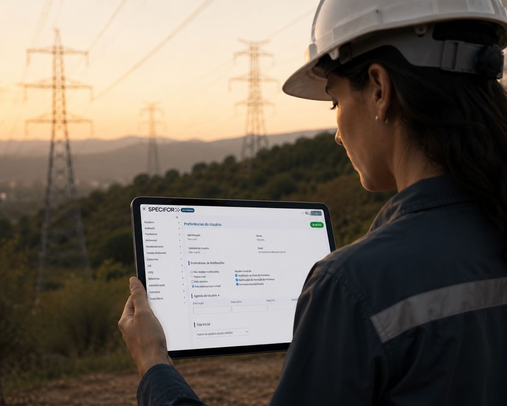
Cadastros consistentes
Base única para propriedades, pessoas, empreendimentos, fornecedores e equipamentos. Tudo conectado, com histórico completo de quem alterou, quando e o quê.
O Specifor On Premise é a plataforma que se molda à sua operação, construída com quem entende de governança territorial. Ao centralizar a governança territorial em um ambiente único e seguro, ela se torna o espelho fiel dos processos da sua empresa e garante rastreabilidade, segurança jurídica e controle sobre os seus processos.

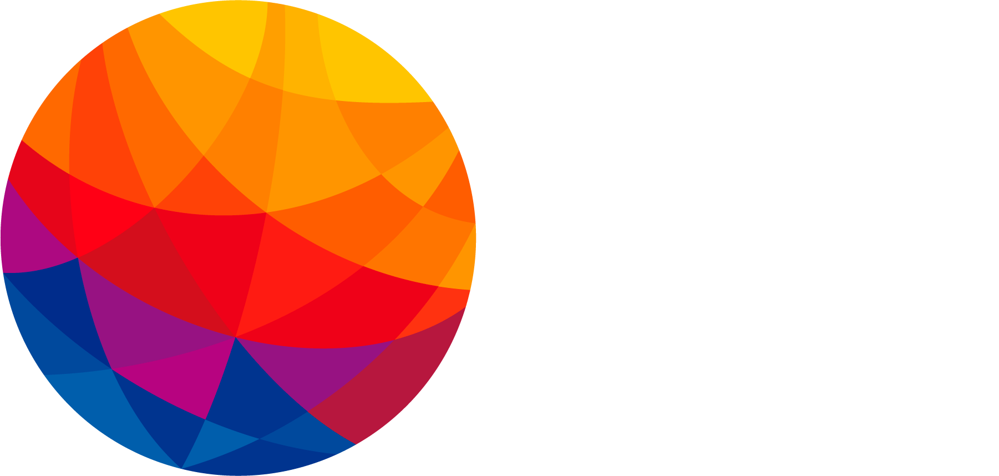
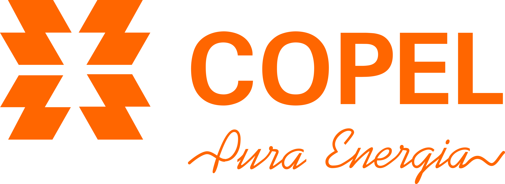




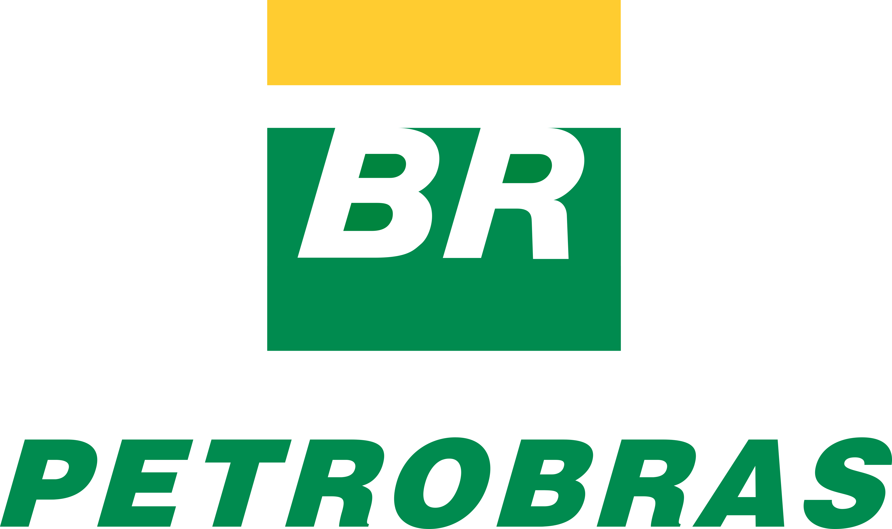

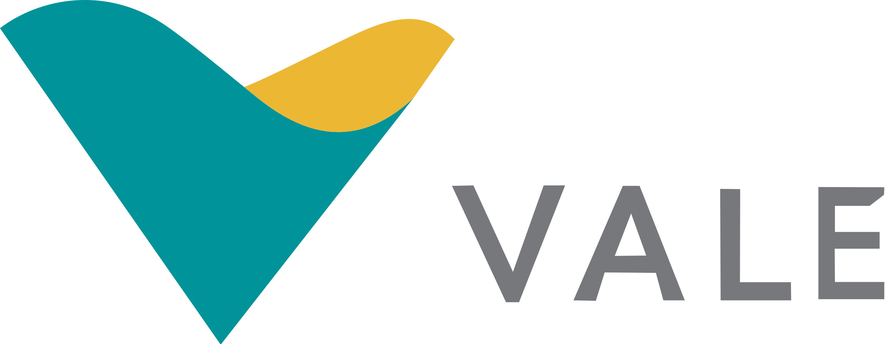


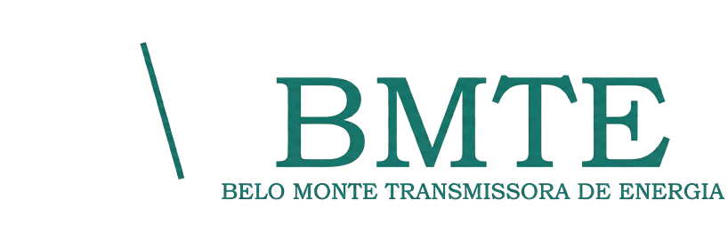


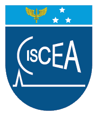


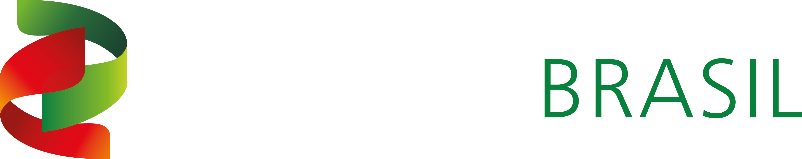


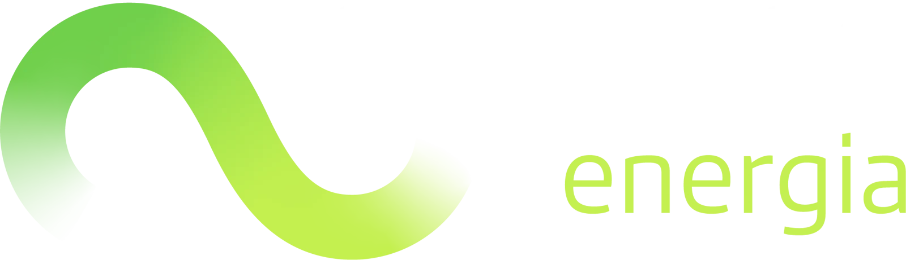
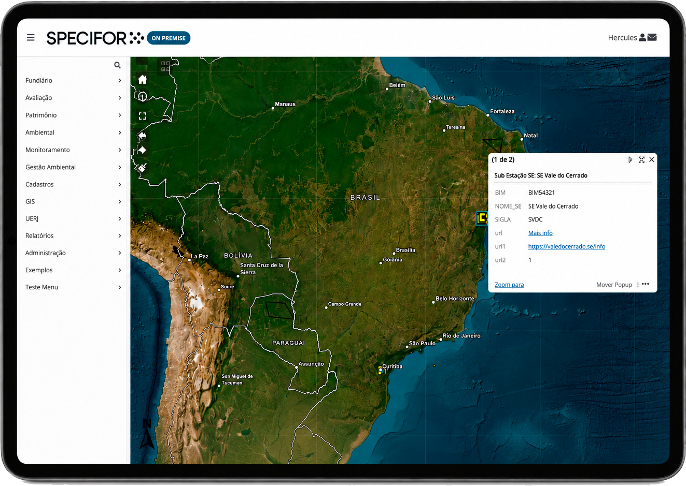
Em setores de alta complexidade, a governança territorial exige um nível de controle e agilidade que planilhas convencionais e sistemas legados cadastrais não conseguem mais suportar, pois estas são suscetíveis a erros humanos e perda de prazos.
Mas e se esses desafios fossem superados com apenas uma solução?
Automatize processos e garanta rastreabilidade total das rotinas operacionais no campo e no escritório

Base única para propriedades, pessoas, empreendimentos, fornecedores e equipamentos. Tudo conectado, com histórico completo de quem alterou, quando e o quê.
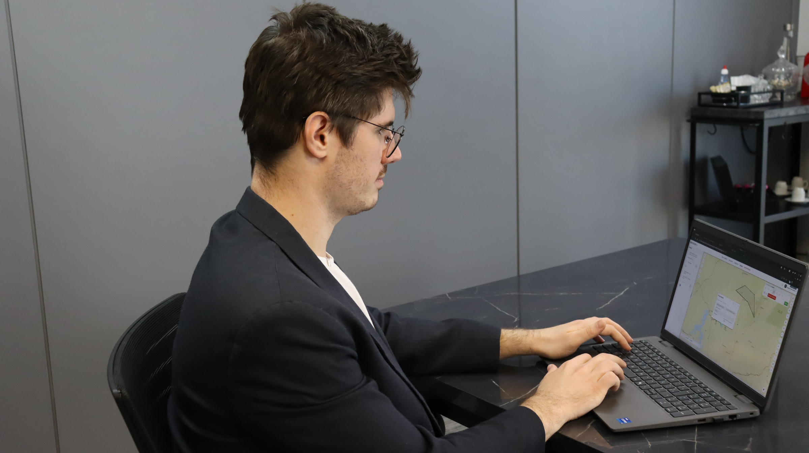
Fluxos que refletem sua operação real, com agentes de IA aplicados onde fizer sentido. O Specifor avança etapas, notifica responsáveis e registra cada ação sozinho.
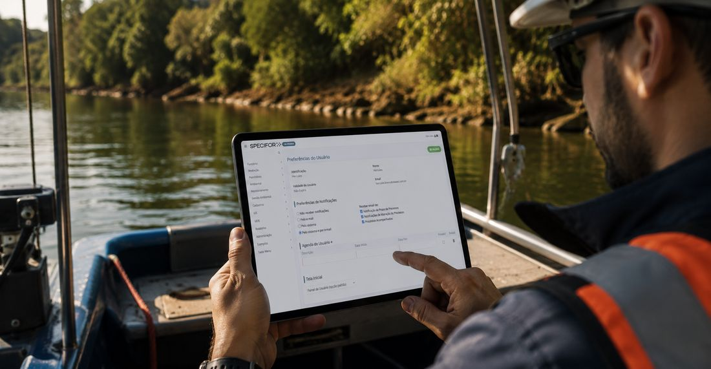
Crie formulários adaptáveis a qualquer processo ou disciplina da sua operação. Sem código, direto com o administrador.
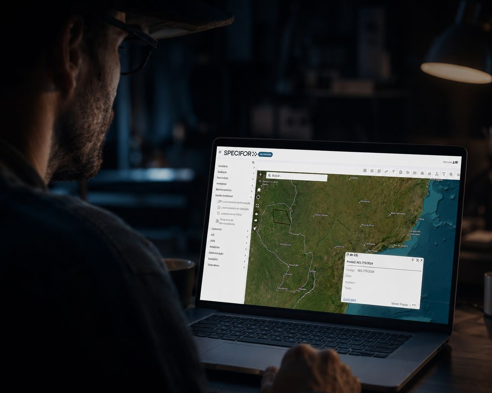
Propriedades e processos georreferenciados automaticamente, com mapas em tempo real e consulta por polígono direto na tela.
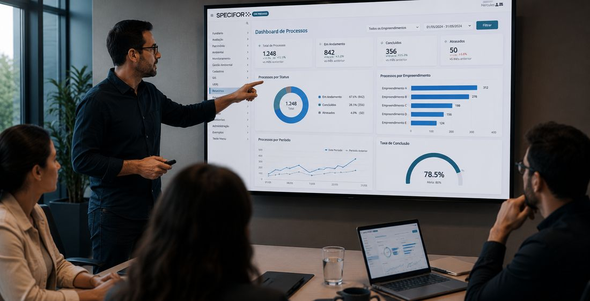
Seus relatórios viram dashboards automaticamente, incorporados dentro da própria plataforma, sem precisar exportar nada.
Leve formulários e processos para o campo e sincronize depois, com permissões definidas por perfil de usuário.
Da implantação ao suporte, cada etapa é pensada para se adaptar ao seu negócio.
"O sistema da 4Asset permite a gente repensar os nossos processos de forma modular e reescrevê-los. Hoje conseguimos ver, numa mesma solução, processos que antes eram completamente desconectados — com visão dos dados e integração com o painel de BI, o que garante uma tomada de decisão muito melhor. Já migramos mais de 41 mil cadastros e temos mais de 24 mil imóveis georreferenciados dentro da plataforma."Mauro Maffessoni e Alessandra Carvalho — Petrobras
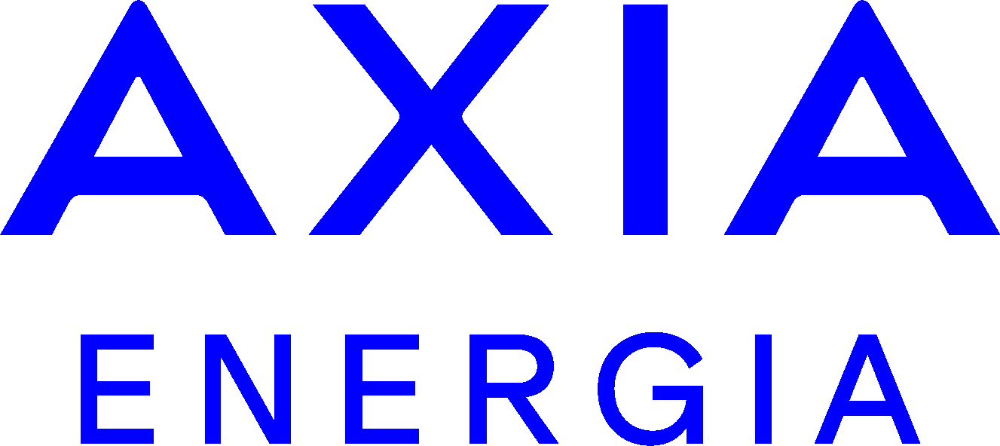
"Produto excelente, principalmente pela possibilidade de realizar customizações e deixá-lo de acordo com as necessidades do cliente. O excelente atendimento e a cordialidade da equipe técnica são destaques do time 4Asset, sempre disponíveis para buscar melhorias e na solução de eventuais problemas."Guilherme — AXIA
"Com a 4Asset, tivemos um ganho de distrato — de contratos de imóveis — de quase 50% de saving. Uma economia de R$15 milhões em 18 meses."Daniel e Emília — Vale
"Sistema robusto, tem flexibilidade para adaptações. Muito bom!"Ivan — BRF
Nossa expertise aplicada em diversos setores
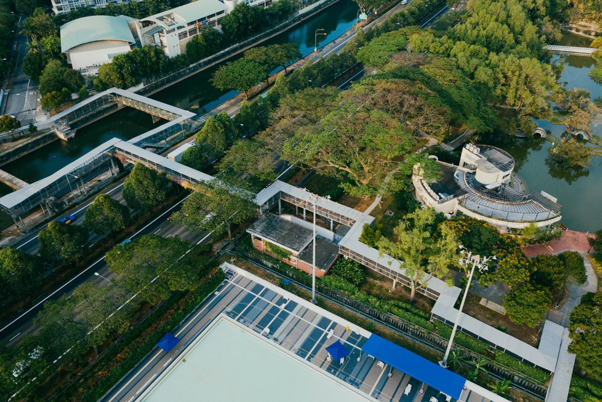


O Specifor On Premise é implantado sob medida no seu ambiente, com Contrato AMS de suporte e evolução contínua. Escolha entre licença perpétua ou assinatura.
Templates de negócio disponíveis para trazer ainda mais eficiência para a sua gestão, sem precisar de grandes e demoradas customizações
Potencialize a sua gestão operacional com add-ons que ampliam a plataforma conforme a necessidade da sua operação.
Quer saber qual a melhor forma de aplicar o Specifor On Premise na sua operação?
Fale com a nossa equipe especializadaConteúdo sobre gestão fundiária, compliance e auditoria de ativos direto do blog da 4Asset.
A análise necessária ao escolher uma solução de gestão estratégica.
Os pontos-chave que o gestor deve considerar no processo de decisão.
Caso prático de auditoria interna durante expansão de parque eólico.
A importância da integração de sistemas para ativos territoriais distribuídos.
Agende uma demonstração personalizada e saiba na prática o que o Specifor On Premise pode fazer pela sua operação.
Quero agendar demonstração →